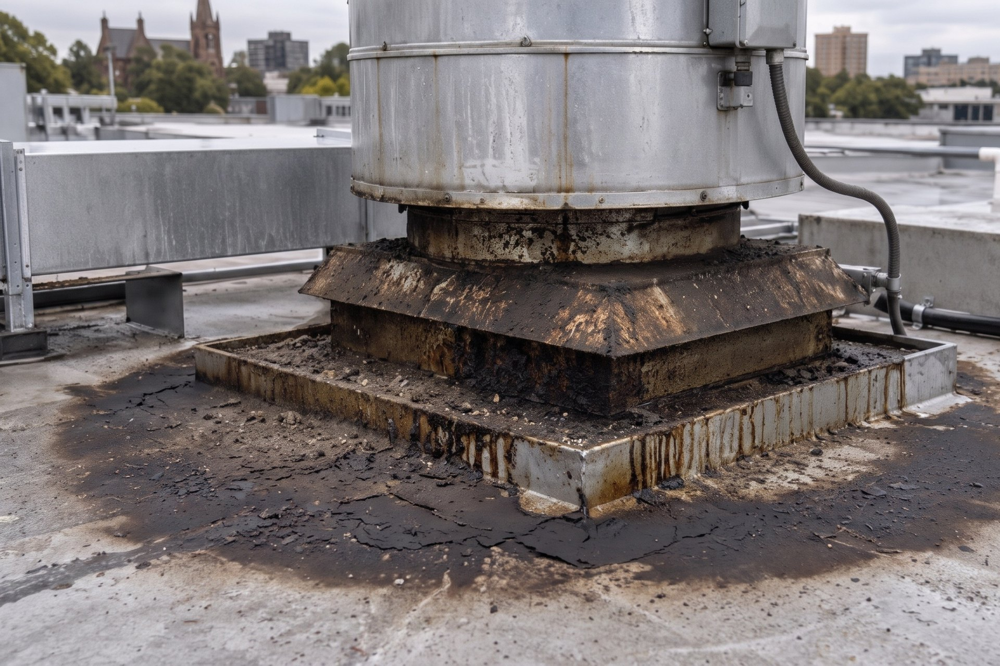

Home / Pressure cleaning
The surrounds, washed on a cycle.
The grease pad under the discharge, the bin room and the dock take the fallout the system carries outside; the entry, the alfresco paving and the awning take the street. Summit washes them on a planned cycle, brings each surface to a defined condition, and photographs it found and finished for the record. Bundled onto a kitchen exhaust program, or scoped on its own for a centre, a group or a building being prepared for paint.
Pressure cleaning — surrounds
| Area | Method | Result |
|---|---|---|
| Grease pad · discharge | Hot + degreaser | Brought to condition · photo pair |
| Bin room & surrounds | Hot pressure | Brought to condition · photo pair |
| Loading dock & ramp | Cold pressure | Brought to condition · photo pair |
| Entry & alfresco paving | Cold pressure | Brought to condition · photo pair |
| Dock seal · north | Inspection | Perished · register item |
Nobody audits the dining room. They audit the bin room.
The surfaces that carry your risk are the ones nobody photographs: the hardstand under the exhaust discharge, the waste area, the dock your staff cross forty times a shift. They accumulate slowly, fail an inspection quickly, and a slip on any one of them is a claim against you. The surfaces your customers judge are the ones out front: the entry, the alfresco paving, the awning and the shopfront.
Summit treats them the way it treats the exhaust system: on a planned cycle, brought to a defined condition, with the found and finished state photographed and filed with the rest of the record. Not a callout after the inspector has been.
The areas that carry the most risk.

Grease pads & discharge zones
The hardstand beneath an exhaust discharge takes the fallout the system does not catch: a slip surface and a roof-drainage problem in one.
Bin rooms & waste areas
The first thing an inspector looks at and the last thing anyone attends to. Degreased, deodorised and photographed on cycle.
Loading docks & hardstand
Docks, ramps and walkways: the routes your staff and deliveries cross daily, kept to condition by the calendar, not by incident.
Entries, alfresco & awnings
The surfaces your customers judge you on: footpath dining, entry ways, awnings and soffits, brought back without closing the front door.
Shopfronts & footpath frontage
Glazing surrounds, signage faces and the paving at the threshold: the small front-of-shop work that sits on the same calendar as the back of house.
Rooftop around the plant
Where a discharge has left a grease trail on the roof, the surrounds are brought back and a containment unit is proposed as a register item.
Three ways the work arrives.
Kitchens on a Summit program
The surrounds are scoped at the same survey as the exhaust system and washed on the same visits, so the travel, the access and the record are already paid for. This is where most of the work sits.
Centres & multi-tenant properties
Walkways, car parks, loading bays, waste areas and the parts of the building the centre looks after, washed on a cycle with coordinated access outside trading hours, work orders and one invoice. Tenant frontages are offered to each tenant directly. Post-refurbishment clean-up is scoped the same way.
Buildings being prepared for paint
Ground-level walls and frontage washed to the preparation the painter asks for, with a photographed scope before anything starts. Older and heritage buildings are washed gently, with a test patch first, and the question of lead paint is raised before any washing, never after.
Where the water goes is decided first.
Most pressure washing ends with grease, detergent and food waste running wherever the fall takes it. Summit looks at that before quoting, not after washing.
Every area is walked for where the water goes, what the surface is made of and what it will take. If a surface cannot be washed without a discharge problem, that is said before the job, not after.
Hot or cold water and a degreaser chosen for the deposit and the substrate. No acids on stone or lime mortar; a test patch on anything old or painted.
An exclusion zone and signage on any surface the public or vehicles can reach, and the signage stays until the surface is dry.
Work is done from the ground with poles where it can be. Working at heights and EWP licences are held for what cannot, and elevated work is scoped at the survey rather than decided on the day.
What was washed, how, and anything that could not be done safely is written on the service record with the photographs.
Assess to record, on one cycle.
Assess
Surfaces, substrate, drainage and access scoped at the survey; the cycle set to how hard each area works.
Protect
Drains, fittings and electrical supply identified, the work zone set out and signed, before any water is used.
Wash
Hot or cold pressure and the right detergent for the substrate: effective on the deposit, safe on the surface.
Record
Each area photographed found and finished, repairs flagged as register items, and the next visit already on the calendar.
Photographed found, photographed finished.
This is the easiest service in the trade to under-deliver, because the evidence washes away. So the record is the deliverable here too.
Put the surrounds on the calendar.
One survey scopes the surfaces, the drainage and the access, and the first visit arrives with a record attached.
enquiries@summitam.au · 0411 854 283